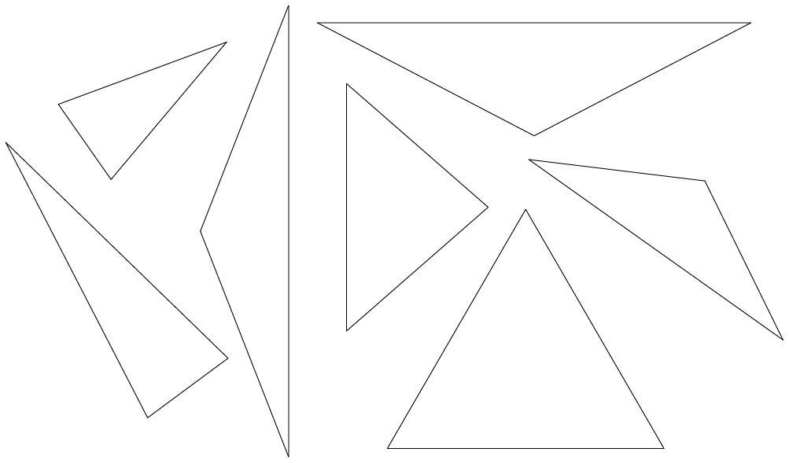
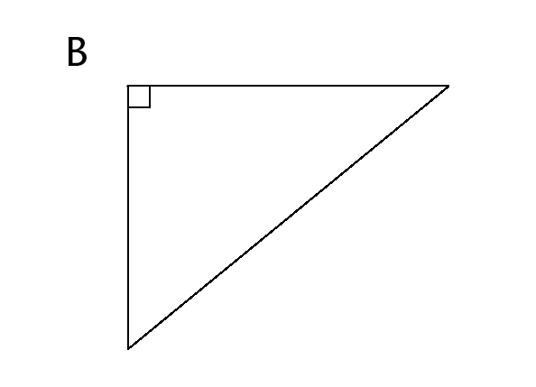
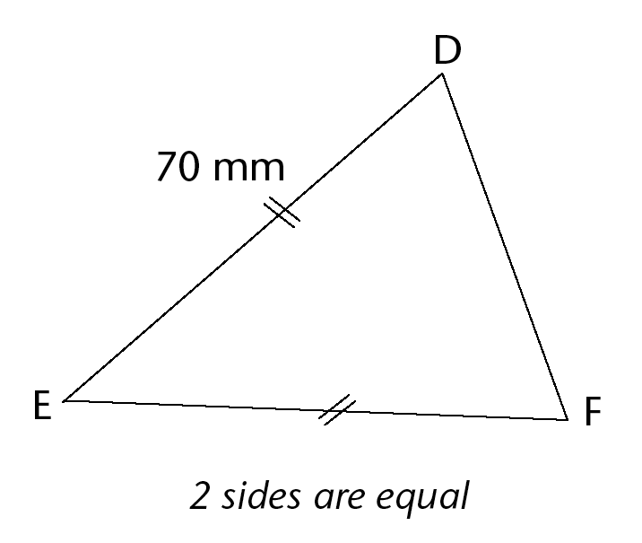
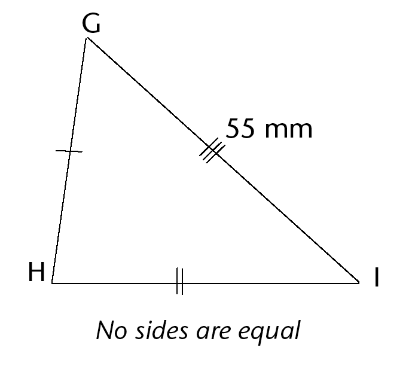
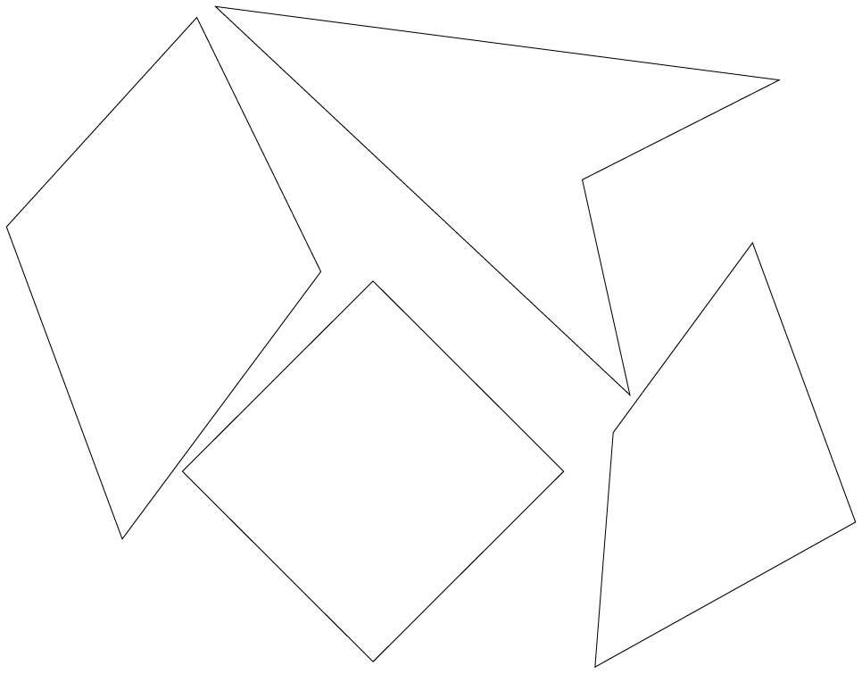
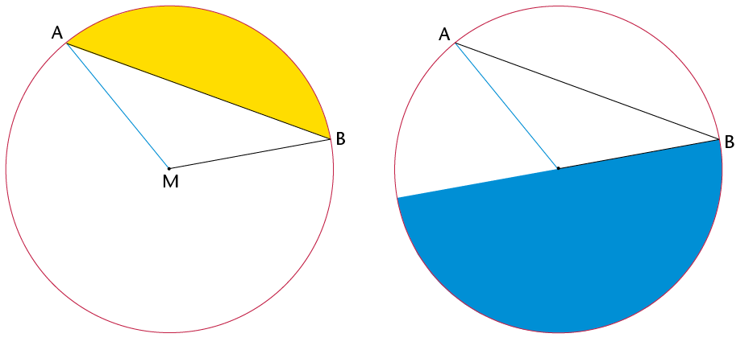
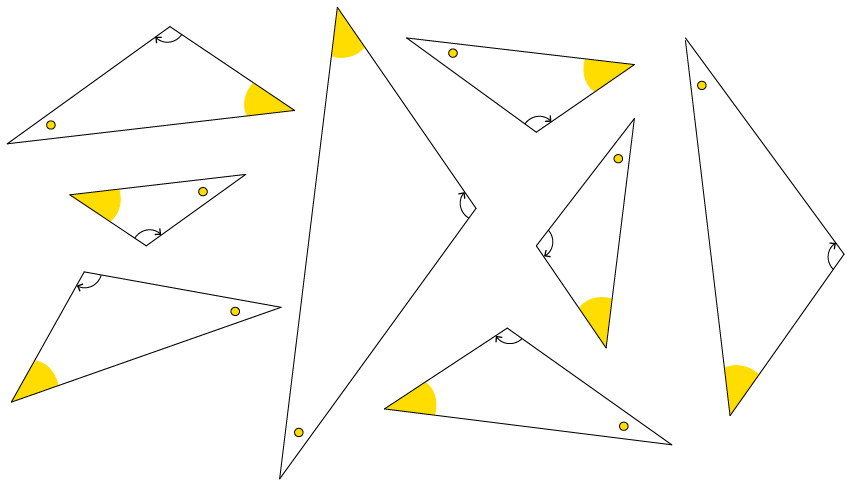

Geometry of shapes
In this chapter, you will learn about different kinds of 2D shapes. You will learn the names given to different shapes. You will also learn about the different properties that different types of shapes have in relation to their sides and angles.
Triangles, quadrilaterals, circles and others
Decide which is which and draw some figures
A triangle is a closed figure with three straight sides and three angles.
A quadrilateral has four straight sides and four angles.
A circle is round and the edge is always at the same distance from the centre.
Which shapes on the opposite page are circles?
-
Which shapes on the opposite page are triangles?
-
Which shapes on the opposite page are quadrilaterals?
Use your ruler to do the following:
Make a drawing of one triangle with three acute angles, and another triangle with one obtuse angle.
-
Draw a quadrilateral with two obtuse angles.
-
Can you draw a triangle with two obtuse angles?
-
-
-
Draw a triangle with one right angle, and a triangle without any right angles.
-
Can you draw a triangle with two right angles?
-
Can you draw a quadrilateral with four right angles?
-
-
These four lines form quadrilateral ABCD.

The two red sides, BC and AD, are called opposite sides of quadrilateral ABCD.
Which other two sides of ABCD are also opposite sides?
-
The lines DA and AB in the figure in question 7 are called adjacent sides. They meet at a point that is one of the vertices (corner points) of the quadrilateral.
-
Name another two adjacent sides in ABCD.
-
AB is adjacent to DA in the quadrilateral ABCD. Which other side of ABCD is also adjacent to DA?
-
-
William says:
"Each side of a quadrilateral has two adjacent sides.
Each side of a quadrilateral also has two opposite sides."
Is William correct? Give reasons for your answer.
-
William also says:
"In a triangle, each side is adjacent to all the other sides."
Is this true? Give a reason for your answer.
-
In each case, say whether the two sides are opposite sides or adjacent sides of the quadrilateral PQRS.

QP and PS
-
QP and SR
-
PQ and RQ
-
PS and QR
-
SR and QR
Different types of triangles
Equilateral, isosceles, scalene and right-angled triangles
A triangle with two equal sides is called an isosceles triangle.
A triangle with three equal sides is called an equilateral triangle.
A triangle with a right angle is called a right-angled triangle.
A triangle with three sides with different lengths and no right angle is called a scalene triangle.

Measure every angle in each of the isosceles triangles given above. Do you notice anything special? If you are not sure, draw more isosceles triangles in your exercise book.
-
Measure the angles and sides of the following triangles. What is special about these triangles? In other words, what makes these triangles different to other triangles?

These triangles are called equilateral triangles.
Measure each angle in each of the following triangles. Do you notice anything special about these angles?

-
Identify the longest side in each of the triangles. If you are not sure which one is the longest side, measure the sides. What do you notice about the longest side in each of these triangles?
These triangles are called right-angled triangles.
Comparing and describing triangles
When two or more sides of a shape are equal in length, we show this using short lines on the equal sides.
Use the following triangles to answer the questions that follow:


Which triangle has only two sides that are equal?
What is this type of triangle called?
-
Which triangle has all three sides equal?
What is this type of triangle called?
-
Which triangle has an angle equal to 90°?
What is this type of triangle called?
Write down the type of each of the following triangles in the space provided:

Finding unknown sides in triangles
-
Name each type of triangle below.



Use the given information to determine the length of the following sides:
AB:
BC:
EF:
-
Can you determine the lengths of GH and HI? Explain your answer.
-
The square in the corner of \(\triangle\)JKL shows that it is a right angle. Give a reason for each of your answers below.

Is this triangle scalene, isosceles, or equilateral?
-
Name the two sides of the triangle that are equal.
-
What is the length of JK?
-
Name two equal angles in this triangle.
-
What is the size of \(\hat{J}\) and \(\hat{L}\) ?
Different types of quadrilaterals
Investigating quadrilaterals
The two pages that follow show different groups of quadrilaterals.
-
In which groups are both pairs of opposite sides parallel?
-
In which groups are only some adjacent sides equal?
-
In which groups are all four angles equal?
-
In which groups are all the sides in each quadrilateral equal?
-
In which groups are all four sides equal?
-
In which groups is each side perpendicular to the sides adjacent to it?
-
In which groups are opposite sides equal?
-
In which groups is at least one pair of adjacent sides equal?
-
In which groups is at least one pair of opposite sides parallel?
-
In which groups are all the angles right angles?
-
-
The figures in group 1 are called parallelograms.
-
What do you observe about the opposite sides of parallelograms?
-
What do you observe about the angles of parallelograms?
-
-
The figures in group 2 are called kites.
What do you observe about the sides of kites?
-
What else do you observe about the kites?
Group 1

Group 2

Group 3

Group 4

Group 5

Group 6

The figures in group 3 are called rhombi.
-
What do you observe about the sides of rhombi?
-
What else do you observe about the rhombi?
Note: One rhombus; two or more rhombi.
-
-
The figures in group 4 are called rectangles.
-
What do you observe about the opposite sides of rectangles?
-
What do you observe about the angles of rectangles?
-
What do you observe about the adjacent sides of rectangles?
-
-
The figures in group 5 are called trapeziums. What do you observe about the opposite sides of trapeziums?
The arrows show which sides are parallel to each other.
-
The figures in group 6 are called squares.
-
What do you observe about the sides of squares?
-
What do you observe about the angles of squares?
-
Comparing and describing shapes
Name each shape in each group.
Group A


Group B


In what way(s) are the figures in each group the same?
Group A:
Group B:
-
In what way(s) does one of the figures in each group differ from the other two figures in the group?
Group A:
Group B:
Finding unknown sides in quadrilaterals
Use what you know about the sides and angles of quadrilaterals to answer the following questions. Give reasons for your answers.
-

-
What type of quadrilateral is ABCD?
-
Name a side equal to AB.
-
What is the length of BC?
-
-

-
What type of quadrilateral is EFGH?
-
What are the lengths of the following sides?
EF:
GH:
-
-

-
What type of quadrilateral is JKLM?
-
What is the length of JK?
-
-

Figure PQRS is a kite with PQ = 4 cm and QR = 10 cm. Complete the following drawing by:
-
labelling the vertices of the kite
-
showing on the drawing which sides are equal
-
labelling the length of each side.
-
Circles
-

-
Make a dot in the middle of the circle on the right. Write the letter M next to the dot. If your dot is in the middle of the circle, it is called the midpoint or centre.
-
Draw lines MA, MB and MC from M to the red points A, B and C.
The three red points are on the circle with midpoint M.
A straight line ,such as AC, drawn across a circle and passing through its midpoint is called the diameter of the circle.
-
-
Measure MA, MB and MC.
If MA, MB and MC are equal in length, you have chosen the midpoint well.If they are not equal, you may wish to improve your sketch of a circle and its parts.
A straight line from the midpoint of a circle to a point on the circle is called a radius of the circle.
The blue line, MA ,is a radius. Any straight line from the centre to the circle is a radius.
The black line AB joins two points on the circle. We call this a chord of the circle.

In the following two diagrams, the coloured sections are segments of a circle. A segment is the area between a chord and an arc.


In the circle on the right, the red section is called a sector of a circle. As you can see, a sector is the region between two radii and an arc.
Similar and congruent shapes
Three groups of quadrilaterals are shown on this page and the next.
What makes each group different from the other groups, apart from the colours?
Group A:
-
Group B:
-
Group C:
Group A

Group B

Group C

Shapes that have the same form, such as the blue shapes on the previous page, are said to be similar to each other. Similar shapes may differ in size, but will always have the same shape.

Example of similar shapes

Example of congruent shapes
Are the red shapes on the previous page similar to each other?
-
Look at groups D, E, F, and G on this page and the next. In each case say whether the shapes are similar and congruent, similar but not congruent, or neither similar nor congruent.
Group D:
-
Group E:
-
Group F:
-
Group G:
Group D

Group E

Group F

Group G